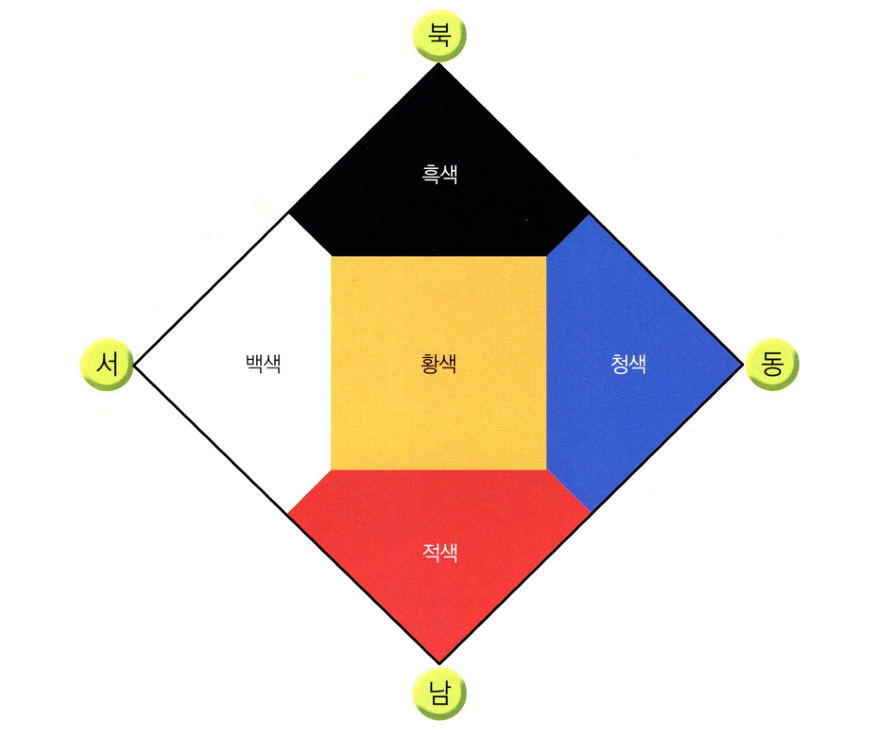
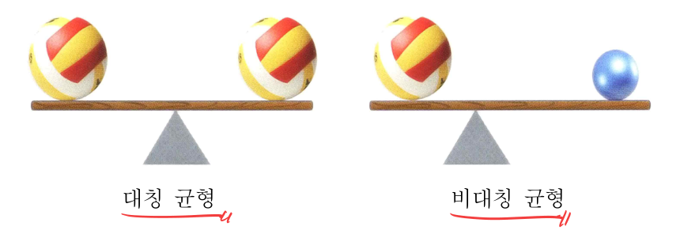

회독본
9.미술
노트 p2–p20 · 19쪽 · 글자는 전사본, 배치는 노트
조형 요소와 원리
성취기준
[4미02-03] 조형 요소의 특징을 자유롭게 탐색하며 주제 표현에 알맞게 활용할 수 있다.
[6미02-03] 조형 요소의 어울림을 통해 조형 원리를 이해하고 주제 표현에 연결할 수 있다.
1. 조형 요소
색
1. 색의 속성
2. 10색상환
3. 오방색

4. 색의 성질
5. 색의 대비
6. 색의 혼합
7. 대표작
2. 조형 원리

소묘
1. 종류
2. 재료
수채화
1. 성질, 재료, 용구
2. 투명/불투명 수채화
3. 물감
표현기법
2. 의도적 표현
3. 수채 표현 방법
1. 우연의 효과
판화
1. 개론
1) 특징
2) 재료와 용구
3) 조각칼
4) 종류
2. 볼록 판화
1) 특징
2) 표현 방법
3) 종류
3. 오목 판화
1) 특징
2) 종류
4. 평판화
1) 특징
2) 종류
5. 공판화
1) 특징
2) 종류
6. 제작 과정
1) 종이 판화
2) 고무판화
3) 모노타이프
4) 스텐실
풍경화, 인물화, 정물화
2. 인물화
3. 정물화
1. 풍경화
조소
1. 조소
2. 찰흙
전통 공예
1. 한지 공예
2. 직조 공예
3. 염색 공예
4. 도자기 공예
전통 회화
1. 특징과 종류
2. 민화
3. 용구, 용필법
4. 표현법
서예
1. 자세
2. 용어
3. 판본체와 궁체
| 판본체 | 궁체 | |
|---|---|---|
| 점획의 굵기 | 일정함 | 다양함 |
| 자형 | 사각형 | 다양함 |
| 접필 | 깊음/자·모, 모음 병서 접필 X | 다양함/자·모 접필 가능 |
| 전절 | 'ㅇ' 제외하고 절, 붓끝 떼고 붓면 조작 | 다양함, 붓면 돌림 |
| 기필·수필 | 장봉으로 기필(역입), 수필 시 회봉 | 노봉으로 기필 |
| 중심 | 가운데 | 살짝 오른쪽 (구궁 오른쪽 세로선) |
디자인
1. 시각 전달 디자인
2. 제품 디자인
3. 환경 디자인
4. 다양한 디자인
사진과 애니메이션
1. 사진
2. 애니메이션
디지털 드로잉
미술관
성취기준
[4미03-01] 미술 작품을 자세히 보고 작품과 미술가에 관해 질문할 수 있다.
1. 대화 중심 감상 교육
사조
성취기준
[6미03-01] 미술 작품을 작품이 만들어진 시대적, 지역적 배경 등과 연결하여 이해할 수 있다.
1. 근대미술
1) 자연주의
2) 사실주의
3) 인상주의
4) 신인상주의
5) 후기인상주의
2. 현대미술
1) 야수파
2) 표현주의
3) 입체파
4) 미래주의
5) 초현실주의
6) 추상 미술
7) 팝 아트
8) 옵아트
9) 대지 미술
10) 자연 미술
11) 설치 미술
12) 공공 미술
13) 정크 아트
14) 키치 아트
15) 오브제
16) 레디메이드
17) 아상블라주
18) 모빌
19) 키네틱 아트
20) 콜라주
21) 포토몽타주
22) 포토 콜라주
23) 행위 미술
24) 낙서 미술 (그라피티)
25) 극사실주의
26) 자동기술법
27) 테셀레이션
28) 파빌리온
29) AI 아트
30) GPS 드로잉
로웬펠드 & 가드너
1) 로웬펠드 - 표현 능력, 발달 단계
2) 가드너 - 감상 능력 발달 단계
펠드만 - 미술 비평 지도과정
성취기준
[6미03-02] 미술 작품의 내용(소재, 주제 등)과 형식(재료와 용구, 표현 방법, 조형 요소와 원리 등)을 분석하여 작품의 특징을 설명할 수 있다.
미술교육의 일반이론
1. 로웬펠드 vs. 아이스너
2. 학년군별 학생 특성
3. 미술교육 사조
미술 수업모형
2. 반응 중심 학습법
3. 창의적 문제 해결법
4. 귀납적 사고법
1. 직접 교수법
5. 기타
미술과 평가 방법
교육과정 설계의 개요
미술과 교과 역량
미술과 공통 교육과정은 총론에서 제시한 인간상 및 역량과 연계하여 심미적 감성 역량, 창의·융합 역량, 시각적 소통 역량, 정체성 역량, 공동체 역량을 미술과 학습을 통해 기를 수 있는 교과 역량으로 설정하였다.
미술과 영역
성격 및 목표
목표
총괄 목표 / 하위 목표
(총괄 목표) 대상과 현상에 대한 미적 체험을 바탕으로 느낌과 생각을 표현하고 감상하는 활동을 통하여 자신과 세계를 이해하고 미술 문화 창조에 주도적으로 참여할 수 있다.
(1) 대상과 현상을 감각적으로 지각하고 반응하면서 심미적 감성을 기른다.
(2) 미술 활동을 통해 자신의 느낌과 생각을 창의적으로 표현하며 경험과 사고를 유연하게 통합하고 확장한다.
(3) 다양한 매체에 기반한 시각 문화를 비판적으로 이해하고 활용하여 시각적으로 소통한다.
(4) 미술을 매개로 주도적으로 사고하고 행동하며 세계와의 관계에서 자신을 이해한다.
(5) 미술 문화의 다원적 가치를 존중하며 협력적 의사소통을 통해 공동체의 문화 발전에 참여한다.
내용 체계
핵심 아이디어 — 영역 매칭
미적 체험은 감각을 깨워 미적 감수성을 풍부하게 하며 미적 가치를 발견하도록 한다.
대상과 현상을 관찰하고 지각하는 경험은 앎을 확장하고 자신을 성찰하게 한다. : 미적 체험
이미지에 대한 비판적 이해는 시각적 소통과 문화적 참여의 토대가 된다. : 미적 체험
빈칸 : 이미지에 대한 (비판적 이해)
표현은 자신의 느낌과 생각을 시각화하는 창의적 사고와 성찰의 순환 과정으로 이루어진다.
빈칸 : 시각화하는 (창의적 사고)와 (성찰)의 순환 과정
다양한 발상은 아이디어와 주제를 발전시키고 표현의 토대가 된다.
작품 제작은 표현 재료와 방법, 조형 요소와 원리 등을 선택하고 활용하여 창의적으로 문제를 해결하는 과정을 통해 예술적 성취를 경험하게 한다.
감상은 다양한 삶과 문화가 반영된 미술과의 만남으로 자신과 공동체의 문화를 이해하게 한다.
작품의 내용과 형식에 관한 맥락적 이해와 비평은 미적 판단 능력을 높인다. : 감상
빈칸 : 맥락적 이해와 비평은 (미적 판단 능력)을 높인다
감상은 서로 다른 관점을 이해하여 삶에서 미술 문화의 다원적 가치를 존중하도록 한다.
빈칸 : 미술 문화의 (다원적 가치)를 존중
핵심 아이디어의 구조 (미적 체험 — 손글씨 라벨)
미적 체험
표현
감상
성취기준
3~4학년군
미적 체험
[4미01-01] 자연물과 인공물을 탐색하는 데 다양한 감각을 활용할 수 있다.
(가) 성취기준 해설
(나) 성취기준 적용 시 고려 사항
미적 체험 영역에서는 학생들이 지각, 성찰, 소통의 개념을 이해하도록 한다.
표현
[4미02-01] 관찰과 상상으로 아이디어를 떠올려 표현 주제를 구체화할 수 있다.
[4미02-03] 조형 요소의 특징을 자유롭게 탐색하며 주제 표현에 알맞게 활용할 수 있다.
[4미02-04] 표현 의도를 가지고 작품을 제작하며 자기 작품을 소중히 여길 수 있다.
[4미02-05] 미술과 타 교과를 관련지어 주제를 표현하는 데 흥미를 가질 수 있다.
(나) 성취기준 적용 시 고려 사항
표현 영역에서는 학생들이 발상, 매체 탐색, 제작의 개념과 방법을 이해하도록 한다.
작품 제작은 주제 선정에서 표현 계획 및 실행과 발표 및 마무리까지 일련의 문제 해결 과정이 되도록 한다.
학생들의 개인차에 따라 과제를 부여한다.
심화 수준의 학생들에게는 표현 방법과 과정을 자기주도적으로 계획하여 실행할 수 있도록 장려하고, 보통 수준의 학생들에게는 표현 주제에 적합한 예시적인 방법을 제안하는 등 학생들의 개인차에 따라 과제를 부여한다.
감상
[4미03-01] 미술 작품을 자세히 보고 작품과 미술가에 관해 질문할 수 있다.
[4미03-04] 작품 감상에 흥미를 가지고 참여하며 작품에 대한 자신의 감상 관점을 존중할 수 있다.
(나) 성취기준 적용 시 고려 사항
감상 영역에서는 학생들이 미술의 이해, 비평, 생활화의 개념을 이해하도록 한다.
미술 작품에 관해 교사가 질문하고 학생이 답변하는 감상이 아니라 미술 작품을 충분히 볼 수 있는 기회와 여건을 제공하여 학생들이 호기심을 갖고 질문을 만들 수 있도록 유도한다. 질문 만들기를 통해 미술 작품에 대한 적극적인 감상 태도와 자신의 감상 관점을 기르도록 한다.
5~6학년군
미적 체험
[6미01-01] 다양한 감각과 매체를 활용하여 자신과 대상을 탐색할 수 있다.
[6미01-02] 자신이나 주변 환경에서 찾은 감각적 특징, 느낌, 생각 등을 관련지어 나타낼 수 있다.
[6미01-03] 주변 환경에 대한 민감한 태도로 대상과 상호 작용하며 새로운 의미를 발견할 수 있다.
[6미01-04] 이미지가 나타내는 의미를 비판적으로 이해하고 느낌과 생각을 전달하는 데 활용할 수 있다.
(가) 성취기준 해설
(나) 성취기준 적용 시 고려 사항
광고, 게임, 만화, 영화, 포스터, 픽토그램, 표지판 등 학습자에게 친근한 생활 속 시각 문화를 탐색하고 이미지에 담긴 의미를 비판적으로 해석함으로써 시각적 문해력을 기르도록 한다.
표현
[6미02-01] 다양한 방법으로 아이디어를 연결하여 확장된 표현 주제로 발전시킬 수 있다.
[6미02-02] 디지털 매체 등 다양한 표현 재료와 용구를 탐색하여 작품 제작에 활용할 수 있다.
[6미02-03] 조형 요소의 어울림을 통해 조형 원리를 이해하고 주제 표현에 연결할 수 있다.
[6미02-04] 주제 표현에 의지를 갖고 표현 과정을 돌아보며 작품을 발전시킬 수 있다.
(가) 성취기준 해설
감상
[6미03-01] 미술 작품을 작품이 만들어진 시대적, 지역적 배경 등과 연결하여 이해할 수 있다.
[6미03-02] 미술 작품의 내용(소재, 주제 등)과 형식(재료와 용구, 표현 방법, 조형 요소와 원리 등)을 분석하여 작품의 특징을 설명할 수 있다.
작품의 내용
작품의 형식
교수·학습 및 평가
(나) 학습자의 주도성을 바탕으로 삶과 긴밀하게 연관된 주제를 다루며 다양한 학습자를 고려한 맞춤형 교수·학습이 이루어질 수 있도록 계획하고 실행한다.
교수·학습 방법
프로젝트 학습 방법은 문제를 심층적으로 연구하며 해결 방안을 모색하고 실행하는 교수·학습 방법이다.
토의·토론 학습 방법은 규칙과 단계에 따라 의견을 나누는 가운데 앎을 명료하게 하고 확장할 수 있는 교수·학습 방법이다.
협동 학습 방법은 공동의 학습 문제를 설정하고 상호 작용을 통해 해결하는 교수·학습 방법이다.
삶과의 긴밀한 연결을 만들고 의미를 구성하며 학습자의 반성적 성찰을 돕기 위해 시각 요소를 담은 신문이나 잡지, 이미지를 포함한 일기 등을 활용한 서사 중심의 교수·학습 방법을 활용할 수 있다.
미술과에서 활용 가능한 디지털 기반 교수·학습 방법에는 실감형 콘텐츠 활용 학습 방법, 메타버스 활용 학습 방법, 학습관리시스템(LMS: Learning Management System) 활용 학습 방법 등을 예로 들 수 있다.